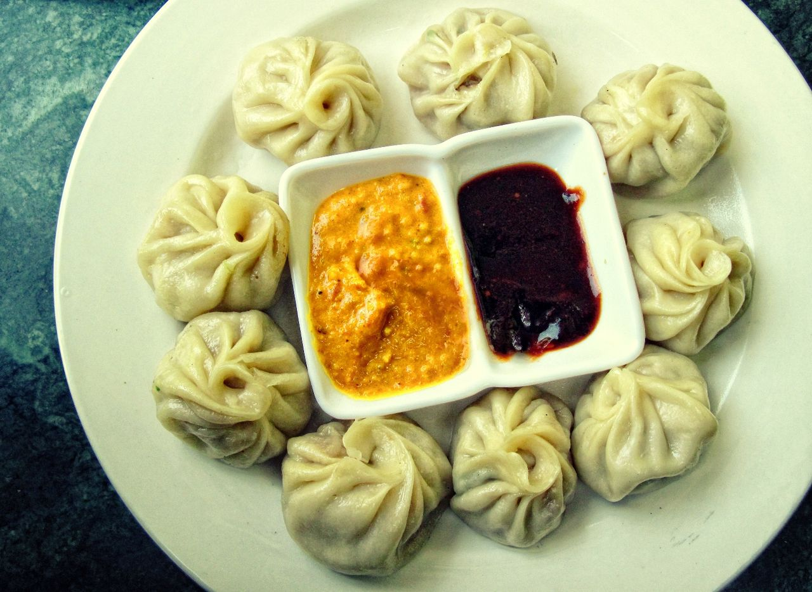

Momos

Description
Momo म:म: - also known as momo-cha ममचा are bite-size dumplings made with a spoonful of stuffing wrapped in dough. Momo are usually steamed, though they are sometimes fried or steam-fried.
Momo is a type of steamed dumpling with some form of filling, most commonly beef and it is originally from Tibet. Momo has become a delicacy in Nepal and Tibetan communities in Bhutan, as well as people of the Indian regions of Darjeeling, Ladakh, Sikkim, Assam, Uttarakhand, Himachal Pradesh and Arunachal Pradesh.
Ingredients
- 1 lb ground chicken(455 g)
- ½ red onion, finely chopped
- ½ cup scallions(50 g), finely chopped
- 1 tablespoon garlic, minced
- 1 tablespoon ginger, grated
- 1 teaspoon turmeric
- 1 teaspoon red chili powder
- 1 teaspoon garam masala
- 2 tablespoons ghee, melted, or butter
- 2 tablespoons olive oil
- 80 small dumpling wrappers
- 1 tablespoon olive oil
Steps
- Make the filling: In a large bowl, combine the ground chicken, red onion, scallions, cilantro, garlic, ginger, turmeric, chili powder, garam masala, ghee, and olive oil. Mix well with your hands.
- Place a tablespoon of filling in the middle of a dumpling wrapper. Using your finger, lightly wet the outer rim with water.
- Pinch the top of the wrapper, using your fingers to pleat and tighten as you close so it looks like a little pouch. Repeat with the remaining wrappers and filling.
- Bring a large pot filled a third of the way with water to boil over high heat and top with a dumpling steamer basket. Line the basket with cabbage leaves. Steam the momos in batches for 12-15 minutes, until the wrapper becomes slightly translucent.
- Make the dipping sauce: In a medium saucepan, heat the olive oil over medium heat. Add the tomatoes, thai chilies, garlic, ginger, turmeric, and Szechuan peppers. Season with salt. Cook, stirring occasionally, until the tomato is softened, for 5 minutes. Remove the pan from the heat, and let cool for 5-10 minutes.
- Transfer the tomato mixture to a blender and add the sesame seeds and cilantro. Blend until smooth.
Home